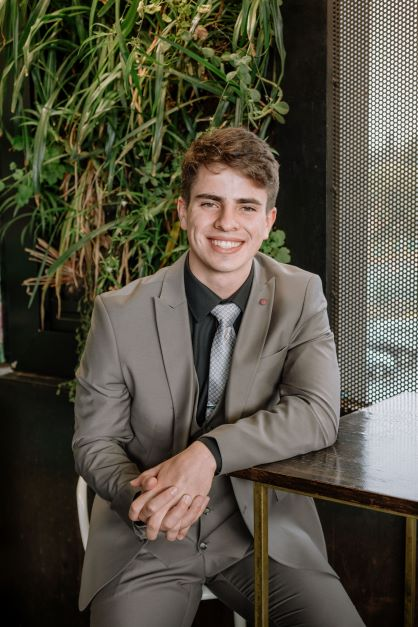

Ryan Shepherd

Summary
I am a driven mechanical engineering student at Stellenbosch University
with a hunger for problem-solving and ideation. I pride myself on having
been exposed to multiple engineering fields, including geotechnical
engineering, mining engineering, and mechanical engineering.
Education
Stellenbosch University, BEng. Mechanical Engineering, 2023-2026
Purdue University, BSc. Mechanical Engineering, 2022-2023
- Dean's List and Semester Honors (Fall 2022, Spring 2023)
-
Awarded a $1,000 stipend as part of the First Time Researcher Fellowship
to engage in 3 credit hours' worth of time commitment in research labs
in the 2023 Spring semester.
St Stithians Boys' College, IEB NSC Student, 2019-2021
- Academic Honours Award, Academic Honours Re-award, Afrikaans Prize, Top 10 Academic.
- Won St Stithians College's entrepreneurship competition and received R5 000 capital
from Easy Equities for advanced research on air filters and development of air purifying appliances.
Relevant Skills
-
Languages: Native English Speaker, Native Afrikaans Speaker, Elementary
German Speaker
-
Relevant Software: MATLAB, C, HTML, Autodesk Fusion 360, Microsoft 360
-
Certifications: Milestones CAD & 3D Printing, Milestones FEA, MATLAB
Onramp, Simulink/Simscape Onramp, RCR Training
Professional Experience
Warsinger Water Lab, Undergraduate Researcher, 2022-2023
-
Evaluated Batch Reverse Osmosis and assisted a team of 6 senior
mechanical engineers with the build of a wave powered device to
sustainably provide clean water to coastal communities facing water
insecurities.
-
Launched an outreach program at West Lafayette Intermediate School to
illustrate marine energy applications
SoilTecnix, Intern, 2022
-
Performed 30 on-site dynamic cone penetrometer tests and recorded
results to determine the underlying soil strength.
-
Assessed the stability of national roads through the presence of
stabilizers and level of carbonation using chemicals.
-
Executed 24 on-site moisture-density tests using a nuclear gauge and
measured readings to determine the soil density.
-
Excavated geometrical testing points for soil collection and soil
analysis to determine the feasibility of reconstructing a road.
-
Reconstructed roads after test completion using original and synthetic
materials to ensure road-user safety.
-
Collected and transported 100+ samples of test material, ranging from
concrete panels to soils, aggregates, and asphalt, for further analysis
in laboratories.
A.W. Chesterton Company, Independent Researcher, 2021
-
Conducted research on flanges and valves, and authored a report titled,
“A Paradigm of Live Loading”, to A.W. Chesterton Co.
-
Investigated and validated the effectiveness of live loading technology
in Power Plant Engineering, presented findings and recommendations to
the company A.W. Chesterton and received complimentary feedback from
Michael Moore (Regional Manager - Sub Saharan Africa).
Campus Involvement
American Society of Mechanical Engineers, Industrial Relations Associate, 2023
- Established and secured strategic corporate partnerships for collaborative engineering-focused events and programs.
- Coordinated information sessions with businesses and connected organizational members with internship opportunities.
Additional Information
LinkedIn
My hobbies